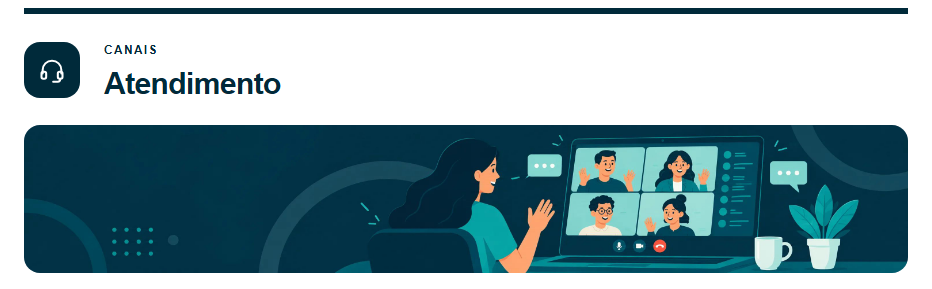
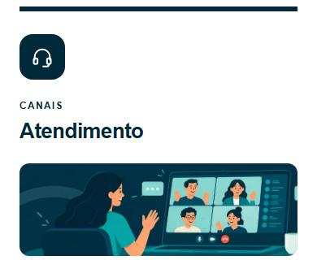
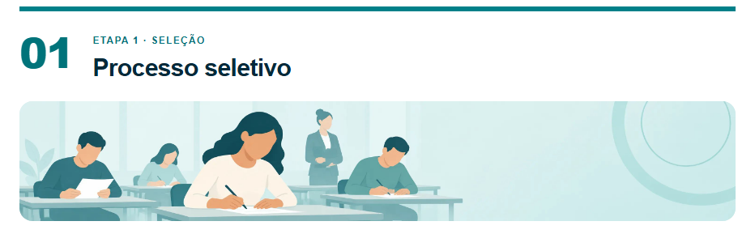
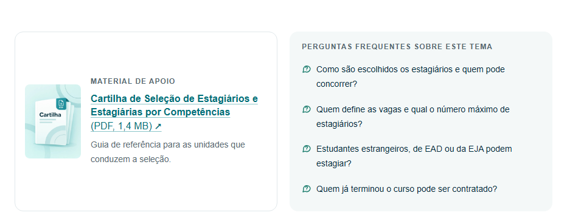

PÁGINA DE ESTÁGIO · RELEASE 1
A tem o menu lateral flutuante; B não tem nada flutuante e põe um “Voltar ao topo” no fim de cada subseção. O conteúdo é o mesmo nas duas.
estagiario-release1-A.html ou estagiario-release1-B.html. As prévias e o render servem só para conferir.O C-update partiu da v51 B. As 9 alterações de texto foram aplicadas também à A, sem mudar mais nada. O texto visível da release B é idêntico ao do C-update, salvo os ajustes abaixo, combinados na revisão.
| Onde | No C-update | Na release |
|---|---|---|
| Certidões pelo Mensageiro | “o documento deve ser apresentado na tarefa do Hércules…” | “as certidões devem ser apresentadas na tarefa do Hércules…” (o parágrafo fala de “essas certidões”) |
| Certidão de casamento | “se houver mudança no percurso do processo admissional, toda a documentação deve ser atualizada de acordo.” | “se o estado civil mudar durante o processo admissional, toda a documentação deve ser atualizada.” |
| Nome da unidade | SEGEP só nas inscrições; “Departamento de Gestão de Recursos Humanos” em outros 5 lugares | “Secretaria de Gestão de Pessoas” nos 6 (certidão de horas ×3, desligamento e regra de remanejamento) |
| Menu lateral (A) | — | “Remanejamento e permuta”, como o novo título do 3.2 |
As 6 imagens apontam para os documentos do portal (JPG, as mesmas artes da pasta assets), sem o ?version=…&t=…: esse trecho só força um novo download, e sem ele o portal entrega sempre a versão mais recente. O código longo no fim do endereço identifica o arquivo e não muda se o título for editado. Conferi as 6: respondem, carregam na página e têm as dimensões declaradas.




Saíram os comentários de desenvolvimento do HTML (cartões desativados, notas de versão) e os comentários do CSS. Ficaram só os avisos para manter os valores da bolsa. Os títulos de seção dentro dos scripts ficaram: removê-los automaticamente arriscaria quebrar o código, e eles não aparecem para ninguém.
A e B: axe-core 4.13 sem violações; o botão “Aumentar a fonte” do portal acompanha; nada fora da tela em 320 px; nenhum texto cortado com o espaçamento da WCAG 1.4.12.